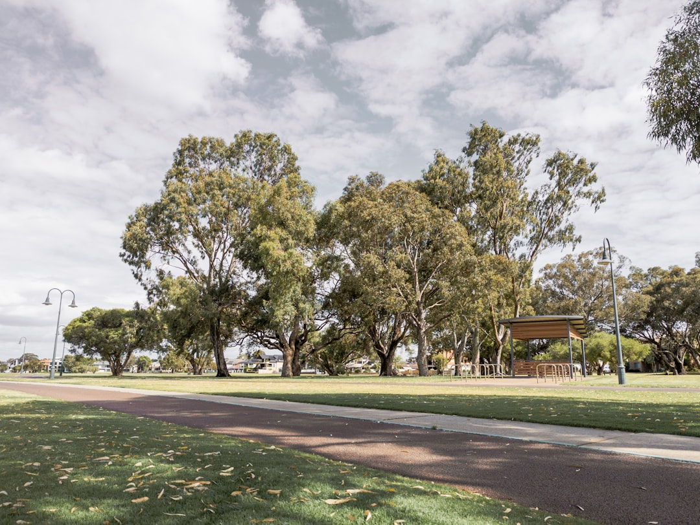

In Perth, the key retaining wall checks are wall height, drainage, material fit and permit status. The source page states WA's building permit exemption generally stops at 0.5 m of retained ground, while quoted guide prices are roughly $250-$600/m2 for limestone block and $450-$700/m2 for concrete post and panel before excavation, drainage and engineering. Taller or connected work needs closer local government and engineering checks.
For homeowners comparing retaining wall builders perth options, the useful starting point is not a brand list but a clear read of height, soil, drainage, access and approval risk.
Retaining Wall Builders Perth Explained
Retaining Walls Perth frames the job around Perth conditions rather than a generic retaining wall checklist: local limestone, sandy sites, slope, boundary position, drainage and the Western Australian permit line all change what should be quoted.
The first useful information for a builder is simple but specific. Measure the approximate length, estimate retained height, note whether the wall sits near a boundary or building work, and describe what is happening above and below the wall. A low garden edge is a different conversation from a wall forming a level building pad on a split-level block.
- Ask whether the quote is priced by square metre of wall face or by a full site scope.
- Ask what excavation, spoil removal, drainage, engineering and permit allowance is included.
- Ask which material suits the block, not just which material is cheapest.
Where Perth Conditions Change The Decision
The published guide says Perth's coastal sand belt sits on Tamala limestone, which is why cream limestone block is often the local quote leader. That does not mean sand removes the need for retaining. The page notes retaining may still be needed for a level pad, boundary proximity, or to stop an excavated face ravelling.
Further inland or on sloped blocks, the decision may move away from a simple face wall towards batter, drainage and engineering. The source page specifically mentions rock and boulder walls battered back for sloped Perth Hills blocks, while also describing concrete post and panel, besser block, timber sleeper and limestone alternatives.
A related retaining walls Perth guide can be useful for comparing the broader wall category before narrowing the job to builder fit, compliance and site access.
Permit And Engineering Questions
The source page gives a clear compliance anchor: in Western Australia, the building permit exemption applies only where a retaining wall retains no more than 0.5 m of ground and does not trigger other listed issues such as being tied to other building work, protecting adjoining land, or affecting a boundary wall or dividing fence.
That threshold should be treated as a quote question, not a final legal answer from a webpage. Before work starts, the owner should confirm the requirement with the relevant local government, especially if the wall is close to a fence, driveway, building pad or neighbouring land.
For walls above the stated threshold, or walls linked to other building work, the page says engineered and permit-approved retaining may be required, with design to AS 4678 and engineering sign-off. A good quote should make that compliance pathway visible rather than leaving it as an assumption.
Drainage Is Part Of The Wall
The published service text is direct about drainage: ag-drain, gravel and geofabric are described as drainage behind every wall, and the guide calls that detail structural. In Perth's wet winter and dry summer cycle, the page says poor drainage is when a wall can fail.
That makes drainage one of the best ways to compare quotes. A low headline wall price is hard to assess if the drainage layer, backfill detail and water exit path are not described. Ask what sits behind the wall face, where water is intended to go, and whether the quoted material changes the drainage design.
- For repairs, ask whether the cause is lean, bulge, cracking, water seepage or soil movement.
- For replacement, ask whether the old wall can be removed without changing nearby levels.
- For new work, ask whether drainage is included as a line item or built into the system price.
Who This Applies To
This guide is most relevant to Perth homeowners planning a new wall, replacing a leaning or bulging wall, or trying to understand whether a quote has allowed for local material, drainage and approval issues. It is also useful where a site has sand, slope, boundary constraints or a wall that forms part of a larger building pad.
It is less useful for comparing decorative garden edging that retains very little ground and has no boundary, building or drainage complication. Even then, the same quote discipline helps: define the retained height, intended finish, access, drainage expectation and who is responsible for checking council requirements.
The practical aim is to turn a vague request into a scoped conversation: wall type, height, soil and slope, drainage, permit status, engineering need, repair signals and what is excluded from the price.
- Measure the wall face. Estimate length and retained height so quotes can be compared on the same wall area.
- Describe the site. Note sand, slope, boundary position, access limits and whether the wall supports a building pad.
- Check the permit trigger. Ask whether the retained height or connection to other work means local government approval or engineering is needed.
- Separate inclusions. Confirm excavation, spoil, drainage, engineering and permit items instead of comparing face material alone.
- Record failure signs. For repair work, photograph lean, bulge, cracking, seepage, gaps or slumping before requesting an assessment.
| Option | Where it may fit | Quote questions |
|---|---|---|
| Limestone block | Local finish often led by Perth quotes, especially where cream limestone suits the site | Is it natural Tamala limestone or reconstituted block, and does price include excavation and drainage? |
| Concrete post and panel | A slotted post and panel system also described as precast or twin-side by some suppliers | Are galvanised posts, panel type, drainage and engineering allowance included? |
| Besser block | Taller engineered retaining or rendered boundary finishes | Is the wall core-filled, steel-reinforced and designed for the retained height? |
| Timber sleeper | Garden terraces and low boundary retaining | Is the timber H4-treated pine or hardwood, and is the height suitable for the system? |
| Rock and boulder | Sloped blocks where a battered, free-draining finish is suitable | Is the wall set back enough, and how is drainage handled behind it? |
Common questions
Do retaining walls over 500 mm need a permit in Perth? The source page says that generally they do. It states Western Australia's exemption is for retaining no more than 0.5 m of ground, subject to other conditions, so the owner should confirm with the local government before work starts.
What price range is stated for Perth retaining walls? The published guide states roughly $250-$600/m2 for limestone block and $450-$700/m2 for concrete post and panel, before excavation, drainage and engineering are added. A quote should explain whether those extra items are included.
Which wall material should a Perth homeowner compare first? The answer depends on the site. The source page highlights limestone block, concrete post and panel, besser block, timber sleeper, rock and boulder options, with soil, slope, boundary position, height and drainage shaping the choice.
What are signs an existing wall may need assessment? The page lists visible lean or bulge, horizontal cracking, gaps at the base, water pooling or seepage after rain, and soil settling or slumping above the wall as warning signs to discuss with a professional.
This guide covers Perth retaining wall planning, wall type comparison, drainage, permit questions, quote inclusions and repair warning signs.